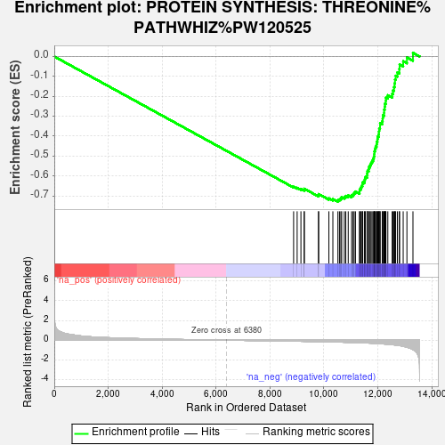
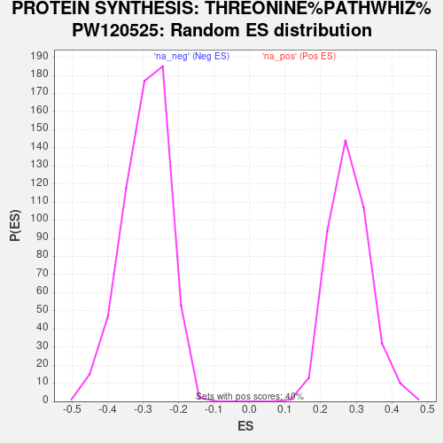

| Dataset | ControlvsDiabete |
| Phenotype | NoPhenotypeAvailable |
| Upregulated in class | na_neg |
| GeneSet | PROTEIN SYNTHESIS: THREONINE%PATHWHIZ%PW120525 |
| Enrichment Score (ES) | -0.7295581 |
| Normalized Enrichment Score (NES) | -2.4943209 |
| Nominal p-value | 0.0 |
| FDR q-value | 0.0 |
| FWER p-Value | 0.0 |

| SYMBOL | RANK IN GENE LIST | RANK METRIC SCORE | RUNNING ES | CORE ENRICHMENT | |
|---|---|---|---|---|---|
| 1 | RPLP0 | 8878 | -0.102 | -0.6544 | No |
| 2 | RPS21 | 9009 | -0.109 | -0.6596 | No |
| 3 | RPL12 | 9149 | -0.115 | -0.6651 | No |
| 4 | RPL28 | 9272 | -0.121 | -0.6692 | No |
| 5 | RPLP1 | 9274 | -0.121 | -0.6642 | No |
| 6 | RPL15 | 9803 | -0.149 | -0.6973 | No |
| 7 | RPL10 | 9805 | -0.149 | -0.6912 | No |
| 8 | RPL7A | 10186 | -0.170 | -0.7123 | No |
| 9 | RPS8 | 10334 | -0.181 | -0.7158 | No |
| 10 | RPS4X | 10521 | -0.193 | -0.7216 | Yes |
| 11 | RPL27A | 10579 | -0.198 | -0.7176 | Yes |
| 12 | RPS11 | 10629 | -0.202 | -0.7129 | Yes |
| 13 | RPS19 | 10662 | -0.203 | -0.7069 | Yes |
| 14 | RACK1 | 10759 | -0.210 | -0.7053 | Yes |
| 15 | RPS27 | 10813 | -0.214 | -0.7004 | Yes |
| 16 | RPL8 | 10904 | -0.221 | -0.6980 | Yes |
| 17 | RPS23 | 11029 | -0.233 | -0.6975 | Yes |
| 18 | RPS16 | 11083 | -0.236 | -0.6917 | Yes |
| 19 | RPL31 | 11124 | -0.239 | -0.6848 | Yes |
| 20 | RPS15 | 11173 | -0.243 | -0.6783 | Yes |
| 21 | RPL30 | 11324 | -0.258 | -0.6788 | Yes |
| 22 | RPL3 | 11326 | -0.258 | -0.6682 | Yes |
| 23 | RPS14 | 11369 | -0.262 | -0.6605 | Yes |
| 24 | RPL19 | 11392 | -0.266 | -0.6511 | Yes |
| 25 | RPS5 | 11430 | -0.269 | -0.6428 | Yes |
| 26 | RPL37 | 11439 | -0.270 | -0.6322 | Yes |
| 27 | RPL22 | 11503 | -0.277 | -0.6255 | Yes |
| 28 | TARS1 | 11520 | -0.278 | -0.6152 | Yes |
| 29 | RPL13 | 11542 | -0.281 | -0.6051 | Yes |
| 30 | RPS24 | 11604 | -0.289 | -0.5977 | Yes |
| 31 | RPL6 | 11607 | -0.289 | -0.5859 | Yes |
| 32 | RPLP2 | 11617 | -0.290 | -0.5745 | Yes |
| 33 | RPL4 | 11666 | -0.296 | -0.5659 | Yes |
| 34 | RPL26 | 11674 | -0.296 | -0.5542 | Yes |
| 35 | RPL35 | 11716 | -0.301 | -0.5448 | Yes |
| 36 | RPL17 | 11749 | -0.305 | -0.5346 | Yes |
| 37 | RPL10A | 11788 | -0.310 | -0.5246 | Yes |
| 38 | RPL36 | 11827 | -0.318 | -0.5143 | Yes |
| 39 | FAU | 11854 | -0.323 | -0.5028 | Yes |
| 40 | RPL18 | 11870 | -0.326 | -0.4905 | Yes |
| 41 | RPL38 | 11873 | -0.326 | -0.4772 | Yes |
| 42 | RPS25 | 11896 | -0.329 | -0.4652 | Yes |
| 43 | RPL32 | 11918 | -0.334 | -0.4530 | Yes |
| 44 | RPL23A | 11955 | -0.338 | -0.4417 | Yes |
| 45 | RPL13A | 11964 | -0.340 | -0.4282 | Yes |
| 46 | UBA52 | 11988 | -0.344 | -0.4157 | Yes |
| 47 | RPL14 | 11998 | -0.345 | -0.4021 | Yes |
| 48 | RPL29 | 12036 | -0.350 | -0.3904 | Yes |
| 49 | RPS13 | 12044 | -0.351 | -0.3764 | Yes |
| 50 | RPL34 | 12053 | -0.353 | -0.3624 | Yes |
| 51 | RPS10 | 12084 | -0.359 | -0.3498 | Yes |
| 52 | RPL5 | 12085 | -0.359 | -0.3350 | Yes |
| 53 | RPS7 | 12165 | -0.373 | -0.3254 | Yes |
| 54 | RPL24 | 12181 | -0.377 | -0.3109 | Yes |
| 55 | RPS2 | 12189 | -0.378 | -0.2958 | Yes |
| 56 | RPS20 | 12233 | -0.387 | -0.2831 | Yes |
| 57 | RPL35A | 12235 | -0.387 | -0.2671 | Yes |
| 58 | RPL37A | 12258 | -0.391 | -0.2526 | Yes |
| 59 | RPS12 | 12265 | -0.392 | -0.2369 | Yes |
| 60 | RPS15A | 12298 | -0.399 | -0.2227 | Yes |
| 61 | RPS9 | 12302 | -0.400 | -0.2064 | Yes |
| 62 | RPS29 | 12373 | -0.416 | -0.1944 | Yes |
| 63 | RPS18 | 12534 | -0.458 | -0.1874 | Yes |
| 64 | RPL27 | 12565 | -0.464 | -0.1704 | Yes |
| 65 | RPSA | 12602 | -0.476 | -0.1534 | Yes |
| 66 | RPS6 | 12625 | -0.485 | -0.1350 | Yes |
| 67 | RPL23 | 12639 | -0.491 | -0.1157 | Yes |
| 68 | RPL11 | 12664 | -0.498 | -0.0969 | Yes |
| 69 | RPS3A | 12728 | -0.523 | -0.0799 | Yes |
| 70 | RPL41 | 12799 | -0.550 | -0.0624 | Yes |
| 71 | RPL21 | 12810 | -0.555 | -0.0402 | Yes |
| 72 | RPS3 | 12943 | -0.629 | -0.0240 | Yes |
| 73 | RPL39 | 13081 | -0.716 | -0.0046 | Yes |
| 74 | RPL36A | 13305 | -0.954 | 0.0183 | Yes |
